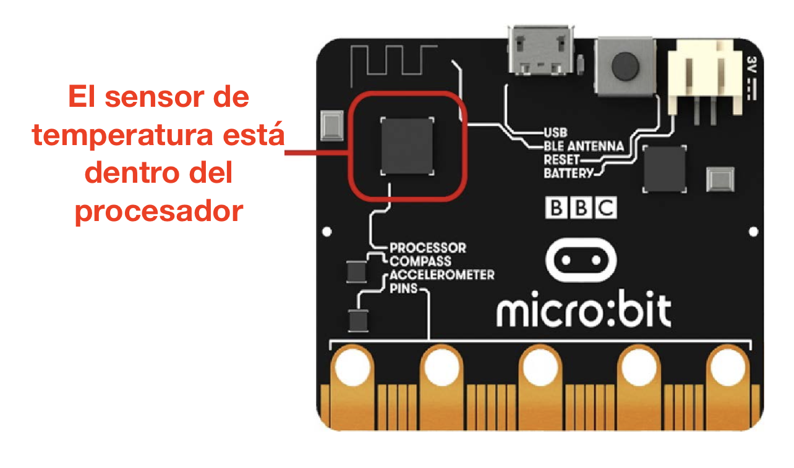
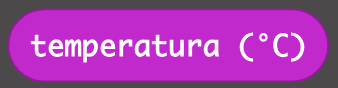
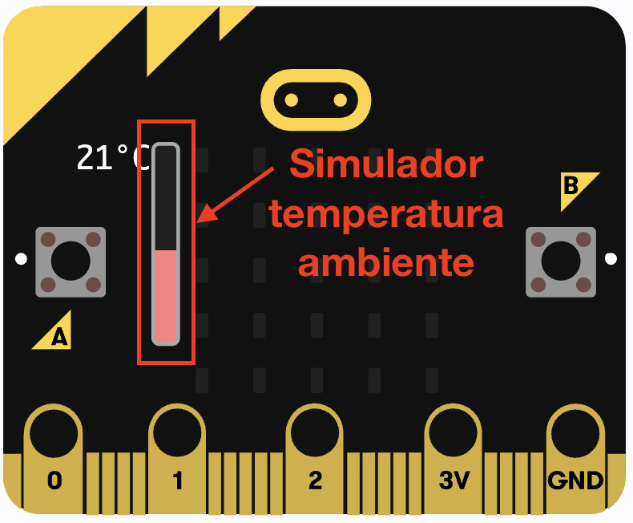
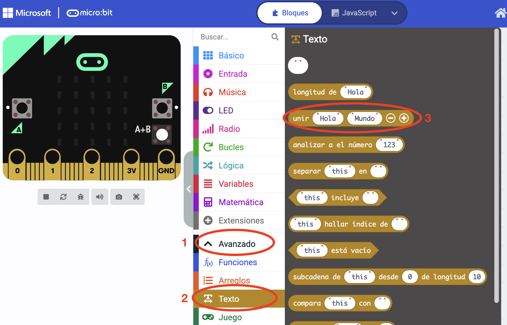

Prácticas
Un sensor de temperatura es un dispositivo que es capaz de medir la temperatura y sus cambios físicos. La información que obtiene la transforma en pulsos eléctricos que transmite al procesador para ejecutar un determinado proceso según su valor.
En tu casa puedes encontrar sensores de temperatura en el aire acondicionado, por ejemplo. Cuando quieres que el aire enfríe hasta una cierta temperatura, la máquina funciona hasta que comprueba mediante su sensor de temperatura que ya se ha alcanzado la temperatura pedida, momento en el que deja de enfriar. Cuando detecta que la temperatura vuelve a subir, comienza a enfriar de nuevo para volver a bajarla.
En Micro:bit hay un sensor de temperatura que se encuentra dentro del procesador de la placa:

Este sensor puede medir la temperatura ambiente. El valor lo pasa al procesador y está disponible en grados Celsius (ºC) en un bloque de MakeCode llamado temperatura (ºC), que se encuentra, como todos los sensores, en la categoría Entrada.

En ciertas ocasiones, puede que el sensor de temperatura no esté bien calibrado y nos dé un valor algo distinto del real. En ese caso, hay que aplicar un valor de ajuste (sumando o restando una cantidad) para obtener el valor real. Para estas prácticas simuladas, el sensor siempre nos dará el valor real y no hay que compensar nada, pero, cuando usemos la placa real, comprobaremos con un termómetro la temperatura real del aula y veremos si nuestro sensor nos da el valor perfecto o si tenemos que compensar.
Para comprobar si tu código con sensor de temperatura funciona bien, el simulador incluye un termómetro que puedes modificar y que simula la temperatura ambiente en cada momento. Aparecerá automáticamente si utilizas el bloque temperatura (ºC) en tu código y puedes deslizar la barra roja para variar la temperatura.

Usar este bloque debería ser sencillo para ti si has hecho bien la tarea anterior, pero en esta tarea vas a tener que mostrar la temperatura en unidades diferentes de los grados Celsius, por lo que tendrás que hacer operaciones matemáticas. Por eso, en las prácticas guiadas vas a aprender a hacer operaciones matemáticas básicas.
Práctica 1 - Mostrar temperatura con unidades
En esta práctica simplemente vas a mostrar la temperatura ambiente en la pantalla de LEDs al pulsar el botón "A", pero indicando que el valor es en grados Celsius (ºC).
El valor de la temperatura es un número, por lo que podrías mostrarlo usando el bloque mostrar número. Sin embargo, como queremos indicar las unidades, tenemos que añadir letras al número, por lo que tendremos que usar el bloque que ya conoces de mostrar cadena.
Para unir el valor numérico de la temperatura con una letra "C" que indique "grados Celsius", vamos a utilizar un bloque nuevo llamado unir "Hola" "Mundo" (+)(-). Este bloque está en una categoría llamada Texto que no encontrarás directamente en MakeCode. Para encontrarla, tienes que desplegar primero el menú que pone "Avanzado". Te dejo una imagen donde puedes ver cómo encontrar el bloque:
Con este bloque puedes hacer un texto uniendo varios trozos de texto. Por defecto el bloque viene para unir dos cadenas, pero, si pulsas el botón (+), puedes añadir las que quieras (con el botón (-) las puedes quitar si te arrepientes).
En este caso, uniremos el valor de la temperatura con una letra "C" (no ponemos el símbolo del grado º porque no lo puede mostrar Micro:bit en su pantalla).
En teoría, con lo que te he contado deberías ser capaz de hacer ya la práctica. Inténtalo y, si tienes problemas, te dejo aquí la solución como siempre:

Práctica 2 - Operaciones matemáticas básicas
MakeCode incluye bloques para realizar cálculos matemáticos en una categoría que se llama "Matemática". Los primeros son los de las operaciones básicas (sumar, restar, multiplicar y dividir) y los puedes agrupar como quieras.
Por ejemplo, imagínate que quieres tomar un número aleatorio "n" entre 1 y 10 y hacer la siguiente operación:
| \[resultado = \frac{\left (n+12 \right )}{2}-7\] |
El resultado lo queremos mostrar por pantalla en Micro:bit y que se vaya repitiendo con otro número aleatorio distinto cada vez. ¿Te ves capaz de escribir el programa para hacerlo?
Es importante que vayas agrupando los bloques poco a poco en el orden correcto en que hay que hacer las operaciones matemáticas. Empieza por la suma. Cuando la tengas, metes todo su bloque en otro para dividir entre 2. Cuando tengas este bloque montado, lo metes en otro para restarle 7.
Te dejo aquí la solución, como siempre: